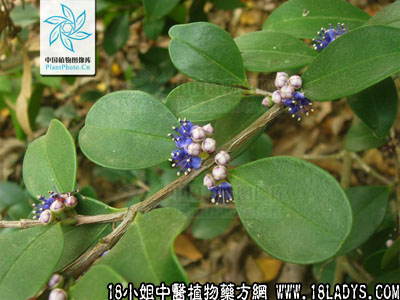

谷木(中药材植物名:构)(植物科目:桑科)

别名：槠实子根。
植物名：构。
生长环境：本品为落叶乔木。广布于各国温带地区，喜生于村落旁的旷地上。
分布：我国及日本，从南到北都有，广州市郊到处可见。
入药部分：根。
采集期：全年。
自采地点：郊外荒地。
性味：性微凉、味淡。
功能：解毒、利水，为性病常用药。
主治、用量和用法：1、湿火骨痛：用干根1至2两，清水煎服；2、花柳入骨：干根1至4两，猪脚1只清水煎服；3、白浊：干根1至4两，猪瘦肉适量，清水煎服；4、皮肤湿毒：干根1至2两，清水煎服。
验方1：（治湿火骨痛方）谷木根2两、老桑枝1两、枸杞根1两、清水5碗，煎成一碗服。
（方解）谷木根去湿解毒枸杞根长于治骨骼之热，桑枝长于治关节之火，故凡骨骼关节疼痛而因于湿火者，用之均效。
（方歌）湿留化火骨节痛，谷木枸杞两用根，去火还痛桑枝煎，湿火清除效似神。
验方2：（治花柳入骨方）谷木根4两、土茯苓4两、猪手1只、清水8碗，煎成1碗服，治皮肤湿毒可将剂量减半。
（方解）花柳入骨，即梅毒骨痛，谷木根、土茯苓均为利水解毒药，民间用以解梅毒，有长久历史，配猪手或猪脚作引经药使用。
（方歌）花柳入骨谷木根，猪手连同土茯苓，三物煎汤同服食，深入骨层搜毒清。
验方3：（治白浊方）谷木根2两、木棉根1两、黑面神根5钱、车前草1两、清水五碗，煎成一碗服。
（方解）谷木根长于利水祛湿解毒，用以治白浊，独用有效，加木棉根、黑面神解毒，车前草利水通淋，相佐为用，功力更大。
（方歌）白浊不离谷木根，木棉根住黑面神，三味还加车前草，解毒通淋各逞能。
参考资料：《广州市中医验方选集第一集》荔湾卫生所治花柳毒入骨，全身骨骼疼痛验方：干谷木树根8两、湿谷木树根12两、雄鸡仔1只、去毛后不开肚（连肠脏），以净水30斤在盆煎至四分之一，去渣，用慢火煎至一大碗粉三次服，隔2小时一次，服后骨骼反痛，而趋好转，四剂而愈。